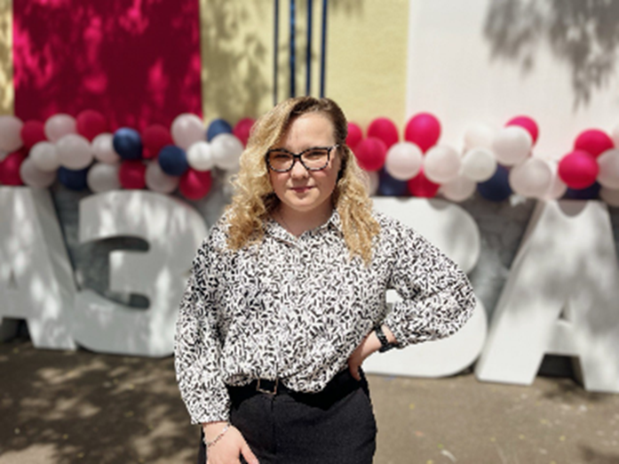
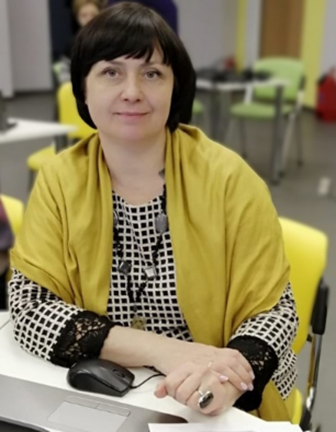
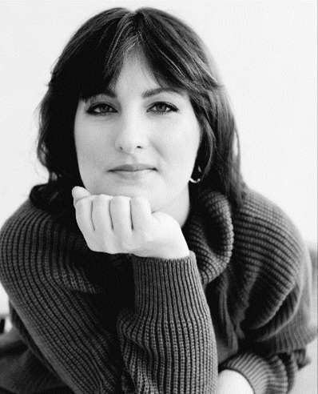
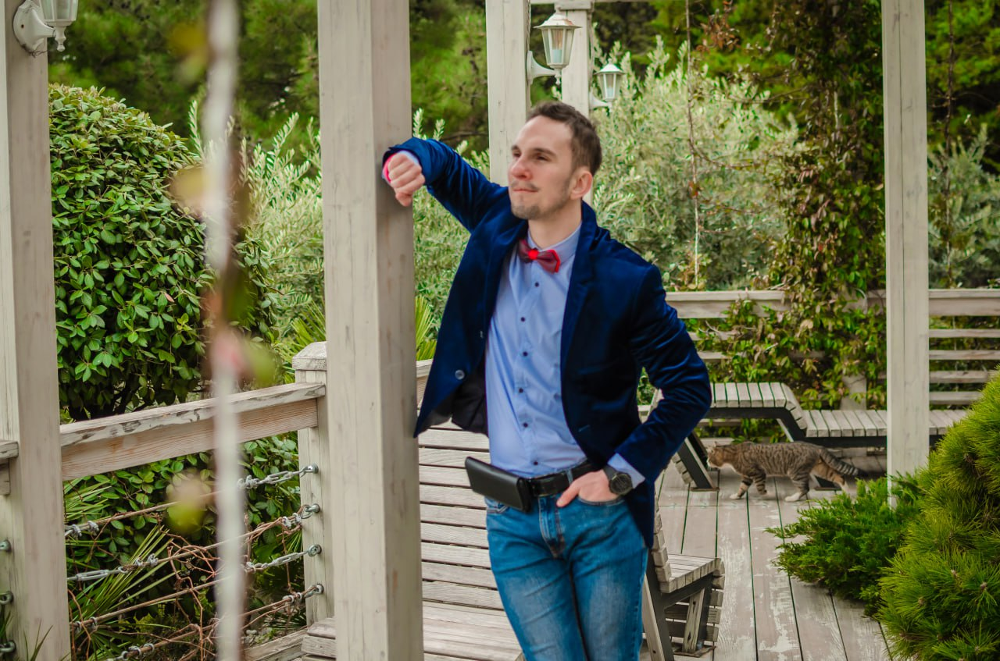

Основная миссия проекта заключается в создании инклюзивного пространства, где каждый ребенок, независимо от особенностей развития, может полноценно участвовать в культурной и образовательной жизни города.
Цель проекта — обеспечение равного доступа к культурно-образовательным ресурсам города для детей с расстройствами аутистического спектра (РАС) через создание удобного навигационного инструмента.
•Инклюзивность — создание условий для равного участия всех детей в культурной жизни
•Доступность — обеспечение понятной и удобной навигации
•Поддержка — оказание помощи семьям, воспитывающим детей с РАС
•Развитие — содействие социальной адаптации и развитию детей
Руководитель проекта - Лосева Дарья Сергеевна – учитель-дефектолог ресурсного класса для детей с РАС, учитель начальных классов коррекционной направленности, выпускник магистратуры МГПУ по направлению «Проектирование городских образовательных инфраструктур. Соавтор статьи «ВОЗМОЖНОСТИ ИСПОЛЬЗОВАНИЯ КУЛЬТУРНО-ОБРАЗОВАТЕЛЬНЫХ РЕСУРСОВ ГОРОДА ДЛЯ ОБУЧАЮЩИХСЯ С РАССТРОЙСТВАМИ АУТИСТИЧЕСКОГО СПЕКТРА», опубликованной в сборнике «НЕЙРОМАГИ». Участник «Интерактивные дебаты: Школа как город и город как школа» в рамках VII Ежегодного международного симпозиума «Образование и город: проектирование развития», 18-20 апреля 2024г, участник множества конференций.
Методическое сопровождение – Винокурова Галина Александровна - кандидат психологических наук, доцент, методист ГБОУ города Москвы «Школа № 2070 имени Героя Советского Союза Г.А. Вартаняна».
Дизайн сайта– Герасимова Надежда (Надя Клей). Училась в СПбГАСУ на архитектора, работала в основном как архитектор-градостроитель и урбанист в таких бюро как, Semren&Mansson и КБ Стрелка. Также занималась различными собственными проектами, начиная от интерьеров библиотек и офисов и заканчивая проектами развития территорий и созданием сервиса для сбора идей горожан Urbanpinion.
Разработка сайта навигатора– Ромашкин Николай Владимирович. Учился в РКСИ(Ростовский колледж связи и иннформатики) по специальности компьютерные сети, после поступил в МТУСИ (Московский Технический Университет Связи и Информатики), также обучался в GeekBrains на спецалиста по вёрстке сайтов -Web-разработчик. Окончил на хорошие оценки. Продолжаю развиваться и рости дальше.
